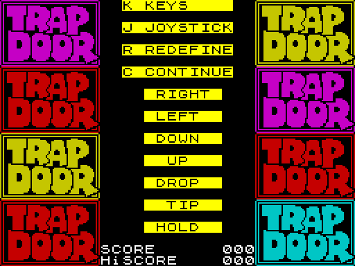

| Routines |
| Prev: F391 | Up: Map | Next: F407 |
|
Used by the routine at GameStart.
Draw the title logo, print the controls/score stream via Print_ControlsMenu (which resumes at MainMenu_SelectOptions). When CONTINUE returns, clear again, colour-cycle the logo, print Messaging_MainMenu ("CHOOSE to be / LEARNER BERK / SUPER BERK"), then continue on to MainMenu_ChooseLearnerOrSuper.
|
||||
| MainMenu | F3EF | CALL Draw_MenuBackground | Call Draw_MenuBackground to clear the menu attribute block. | |
| F3F2 | CALL Draw_MainMenuLogo | Call Draw_MainMenuLogo to draw the main-menu logo. | ||
| F3F5 | CALL Print_ControlsMenu | Call Print_ControlsMenu to print the controls/score stream and handle options. | ||
|
Second pass (after CONTINUE): refresh, colour-cycle, print the Learner/Super chooser.
|
||||
| MainMenu_ChoosePass | F3F8 | CALL Draw_MenuBackground | Call Draw_MenuBackground to clear the menu attribute block again. | |
| F3FB | CALL ColourCycle_MainMenuLogo | Call ColourCycle_MainMenuLogo to colour-cycle the logo. | ||
| F3FE | LD HL,$3C00 | Point HL at CHARSET-0100 then store it as the current character set. | ||
| F401 | LD ($72F9),HL | |||
| F404 | CALL Print_Menu_Strings | Call Print_Menu_Strings to print the inline chooser stream at Messaging_MainMenu. | ||
|
Continue on to MainMenu_ChooseLearnerOrSuper.
|
||||
| Prev: F391 | Up: Map | Next: F407 |
